Our Bag Collection
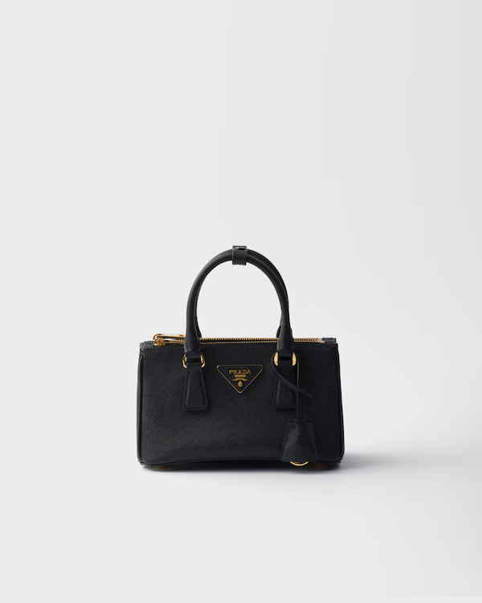
Prada Galleria patent Saffiano leather mini-bag
₱80,000
Prada Galleria patent Saffiano leather mini-bag
₱80,000
Elevate your wardrobe with the Prada Galleria Patent Saffiano Leather Mini-Bag, a timeless icon that embodies luxury and refined craftsmanship. Made from Prada’s signature patent Saffiano leather, this structured mini bag features a glossy finish and durable cross-hatched texture that enhances both elegance and resilience. Its sleek silhouette, polished hardware, and iconic Prada logo create a sophisticated statement suitable for any occasion. Perfectly sized for essentials, this mini-bag seamlessly blends fashion and function, making it an ideal companion for both day and evening wear.

FEATURES
₱80,000
* Material: Signature patent Saffiano leather with premium leather lining
* Design: Structured mini silhouette with dual top handles and detachable shoulder strap
* Closure: Secure top zip closure
* Hardware: Polished metal accents with iconic Prada logo detail
* Interior: Organized compartments for essentials
* Durability: Scratch-resistant Saffiano leather with long-lasting structure

STYLING TIP
₱80,000
* Carry it by the top handles for a polished, elegant look
* Use the detachable strap for a chic crossbody or shoulder style
* Pair it with tailored suits, dresses, or smart-casual outfits for effortless sophistication.
* This mini-bag can instantly refine and elevate any outfit.
* It should be part of every luxury lover’s collection for its timeless appeal.
* The bag might become your go-to accessory for both daytime events and evening occasions.
* It could also serve as an exceptional gift for milestones, celebrations, or special moments.
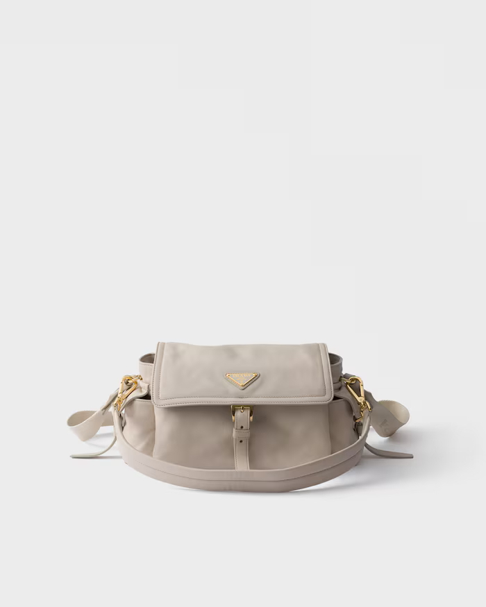
Prada Galleria patent Saffiano leather mini-bag
₱80,000
Prada explore medium nappa leather shoulderbag with flap
₱80,000
Elevate your wardrobe with the Prada Galleria Patent Saffiano Leather Mini-Bag, a timeless icon that embodies luxury and refined craftsmanship. Made from Prada’s signature patent Saffiano leather, this structured mini bag features a glossy finish and durable cross-hatched texture that enhances both elegance and resilience. Its sleek silhouette, polished hardware, and iconic Prada logo create a sophisticated statement suitable for any occasion. Perfectly sized for essentials, this mini-bag seamlessly blends fashion and function, making it an ideal companion for both day and evening wear.

FEATURES
₱80,000
* Material: Signature patent Saffiano leather with premium leather lining
* Design: Structured mini silhouette with dual top handles and detachable shoulder strap
* Closure: Secure top zip closure
* Hardware: Polished metal accents with iconic Prada logo detail
* Interior: Organized compartments for essentials
* Durability: Scratch-resistant Saffiano leather with long-lasting structure

STYLING TIP
₱80,000
* Carry it by the top handles for a polished, elegant look
* Use the detachable strap for a chic crossbody or shoulder style
* Pair it with tailored suits, dresses, or smart-casual outfits for effortless sophistication.
* This mini-bag can instantly refine and elevate any outfit.
* It should be part of every luxury lover’s collection for its timeless appeal.
* The bag might become your go-to accessory for both daytime events and evening occasions.
* It could also serve as an exceptional gift for milestones, celebrations, or special moments.
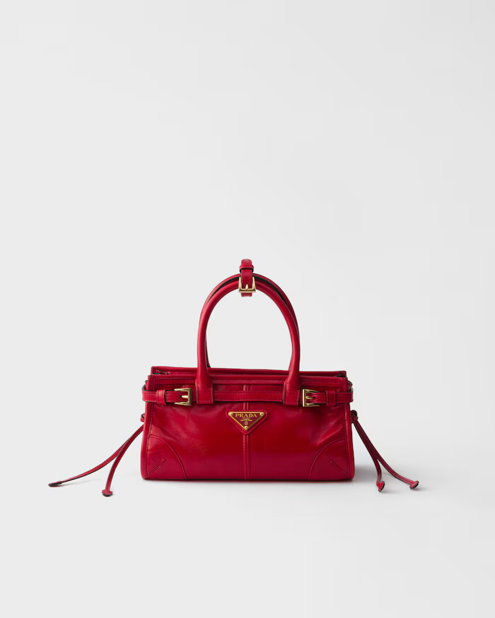
Prada Bonnie leather mini hand bag
₱157,41
Prada Bonnie leather mini hand bag
₱157,41
Elevate your everyday elegance with the Prada Bonnie Leather Mini Hand Bag — a sophisticated statement piece that blends modern femininity with timeless Italian craftsmanship. Crafted from smooth premium leather, this mini handbag features a softly structured silhouette that offers both charm and practicality. Refined hardware details and the iconic Prada logo complete the look with understated luxury. Compact yet functional, it is perfectly sized to carry your daily essentials while maintaining a sleek and polished appearance for any occasion.

STYLING TIP
₱157,41
* Carry it by hand for a refined, ladylike look
* Wear it crossbody for a relaxed yet chic style
* Pair it with dresses, tailored outfits, or smart-casual ensembles
* This mini handbag can instantly enhance a simple outfit with elegance.
* It should be a staple piece in any luxury accessory collection.
* The bag might become your favorite companion for both daytime and evening outings.
It could also serve as a meaningful gift for birthdays, anniversaries, or special celebrations.
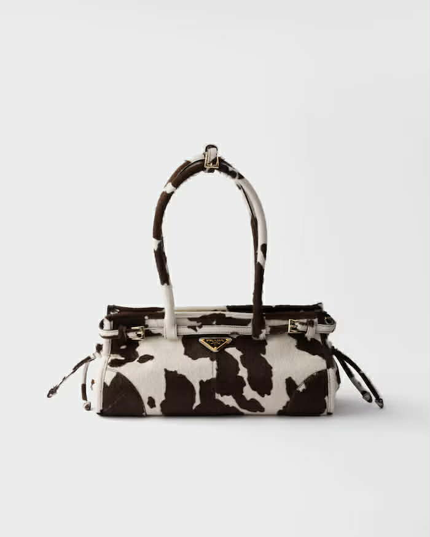
Prada Bonnie medium printed leather handbag
₱342,200
Prada Bonnie medium printed leather handbag
₱342,200
Refine your statement style with the Prada Bonnie Medium Printed Leather Handbag — a bold yet elegant piece that showcases exceptional craftsmanship and contemporary design. Made from high-quality printed leather, this handbag features a structured silhouette enhanced by eye-catching patterns and refined detailing. The iconic Prada logo and polished metal hardware add a luxurious finishing touch. Spacious yet sophisticated, the medium size offers ample room for your essentials while maintaining a sleek and polished profile, making it perfect for both work and social occasions.

FEATURES
₱342,200
* Material: Premium printed leather with smooth interior lining
* Design: Structured medium silhouette with distinctive printed finish
* Handles/Strap: Dual top handles with optional detachable shoulder strap
* Closure: Secure zip or flap closure (depending on variation)
* Hardware: Polished metal accents with signature Prada logo
* Capacity: Spacious interior suitable for wallet, phone, cosmetics, and daily essentials
* Durability: High-quality leather designed for long-lasting wear

STYLING TIP
₱342,200
* Carry it by the top handles for a sophisticated, professional look
* Wear it over the shoulder for a modern and practical style
* Pair it with tailored suits, dresses, or smart-casual outfits to highlight its printed design
* This handbag can elevate your overall look with its distinctive printed design.
* It should be part of a luxury collection for those who appreciate bold elegance.
* The bag might become your go-to accessory for workdays or weekend gatherings.
* It could also make a memorable gift for special occasions and celebrations.
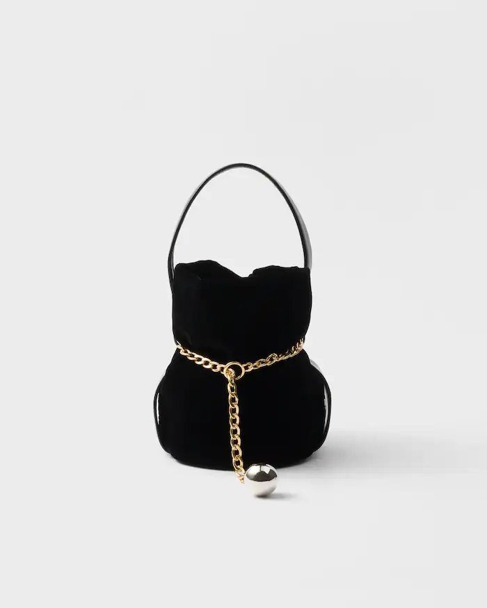
Prada Petit Sac Noir mini velvet
₱126,614
Prada Petit Sac Noir mini velvet
₱126,614
Add a touch of refined glamour to your collection with the Prada Petit Sac Noir Mini Velvet bag — a sophisticated piece that exudes elegance and charm. Crafted from luxurious velvet, this mini bag features a soft, plush texture that enhances its rich and timeless appeal. The compact silhouette is beautifully complemented by polished metal hardware and the iconic Prada logo, creating a statement accessory perfect for evening events or chic daytime outings. Small yet striking, this mini bag offers just enough space for your essentials while elevating your look with effortless luxury.

FEATURES
₱126,614
* Material: Premium velvet with smooth interior lining
* Design: Compact mini silhouette with soft, structured form
* Handles/Strap: Top handle with detachable shoulder strap for versatile wear
* Closure: Secure top closure for safe storage
* Hardware: Polished metal accents with signature Prada logo
* Capacity: Ideal for phone, cards, lipstick, and small essentials

STYLING TIP
₱126,614
* Carry it by the top handle for an elegant evening look
* Wear it crossbody for a modern, fashion-forward style
* Pair it with cocktail dresses, tailored suits, or chic monochrome outfits
* This mini velvet bag can instantly add a luxurious touch to any outfit.
* It should be part of a refined accessory collection for lovers of timeless elegance.
* The bag might become your go-to piece for special occasions and evening events.
* It could also serve as a memorable and stylish gift for celebrations.
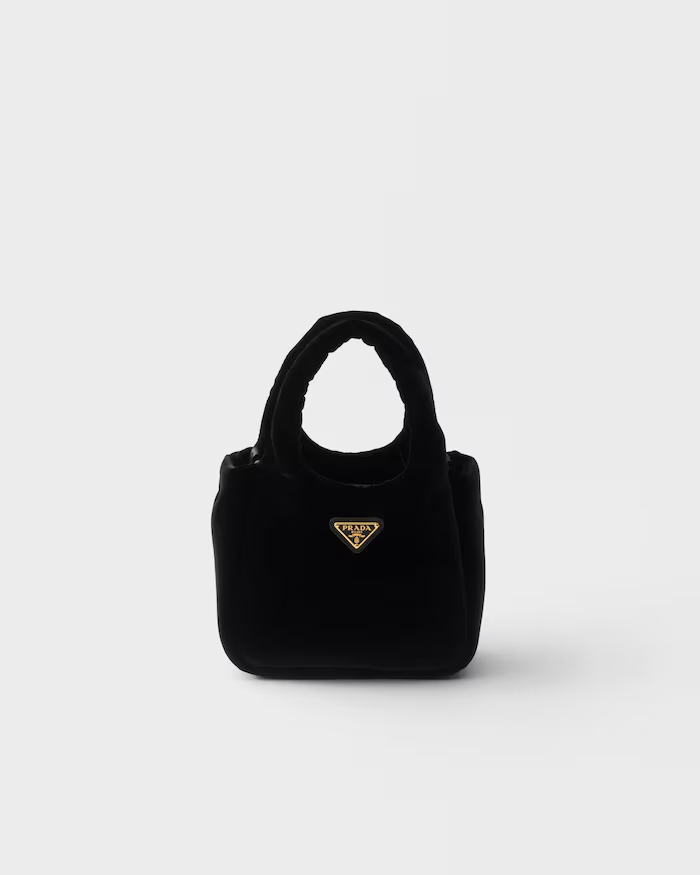
Padded velvet mini handbag
₱119,770
Padded velvet mini handbag.
₱119,770
Add texture and elegance to your accessory collection with this Padded Velvet Mini Handbag — a chic statement piece that blends softness with modern sophistication. Crafted from plush velvet with a padded design, this mini handbag offers a luxurious feel and a visually striking silhouette. The compact structure is enhanced by refined metal accents and a secure closure, making it both stylish and practical. Perfect for evenings out or elevating daytime looks, this mini handbag delivers charm, comfort, and contemporary flair in one beautifully designed piece.

FEATURES
₱119,770
* Material: Soft padded velvet with smooth interior lining
* Design: Quilted or padded mini silhouette for added texture
* Handles/Strap: Top handle with optional detachable shoulder strap
* Closure: Secure zip or magnetic closure
* Hardware: Polished metal accents for a refined finish
* Size: Compact yet spacious enough for small essentials

STYLING TIP
₱119,770
* Carry it as a statement piece with minimalist outfits
* Pair it with dresses or tailored sets for an elegant look
* Style it with heels and bold accessories for evening occasions
* This mini handbag can instantly elevate your outfit with its plush texture.
* It should be included in any collection that values modern elegance.
* The bag might become your favorite accessory for special outings.
* It could also serve as a stylish gift for birthdays or celebrations.
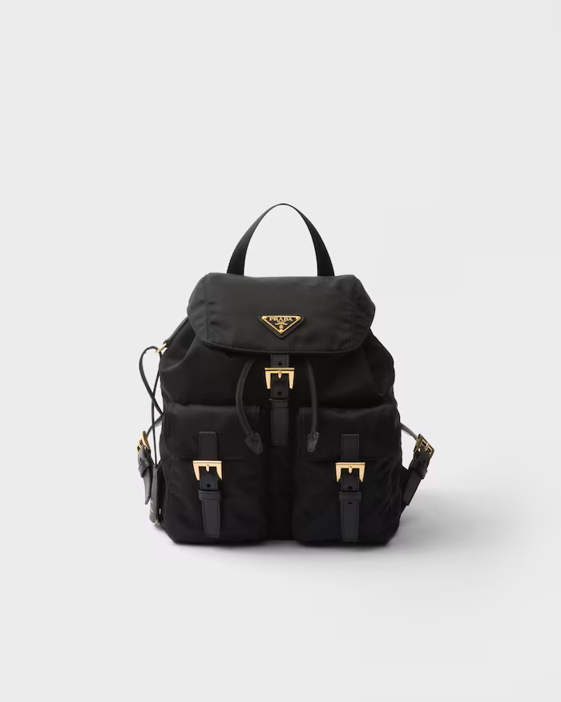
Prada Re-Edition 1978 small Re-Nylon backpack
₱126,614
Prada Re-Edition 1978 small Re-Nylon backpack
126,614
Rediscover archival elegance with the Prada Re-Edition 1978 Small Re-Nylon Backpack — a modern revival of a classic silhouette inspired by Prada’s heritage designs. Crafted from innovative Re-Nylon fabric, made using regenerated materials, this backpack combines sustainability with iconic luxury. Its compact structure, sleek detailing, and signature Prada triangle logo create a refined yet sporty aesthetic perfect for everyday sophistication. Lightweight, durable, and effortlessly stylish, this small backpack is designed for those who appreciate both fashion and function.

FEATURES
₱126,614
* Material: Sustainable Re-Nylon with leather trim details
* Design: Compact, structured backpack inspired by the 1978 archive model
* Straps: Adjustable shoulder straps for comfortable wear
* Closure: Flap and buckle or drawstring closure (depending on variation)
* Hardware: Polished metal accents with signature Prada enamel triangle Logo
* Capacity: Ideal for daily essentials such as phone, wallet, small tablet, and cosmetics
* Durability: Lightweight, water-resistant, and long-lasting material
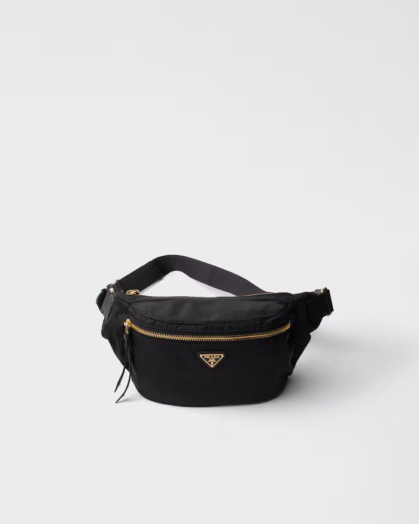
Re-Nylon and Saffiano leather belt bag
₱95,816
Re-Nylon and Saffiano leather belt bag
₱95,816
Upgrade your everyday essentials with the Re-Nylon and Saffiano Leather Belt Bag — a modern fusion of sustainability and signature luxury. Crafted from innovative Re-Nylon and accented with Prada’s iconic Saffiano leather, this belt bag combines lightweight durability with refined texture. The sleek silhouette is enhanced by polished hardware and the recognizable triangle logo, delivering a sporty yet sophisticated statement. Designed for hands-free convenience, this versatile piece transitions effortlessly from casual streetwear to elevated smart-casual looks.

FEATURES
₱95,816
* Material: Sustainable Re-Nylon with signature Saffiano leather trim
* Design: Streamlined belt bag silhouette with minimalist detailing
* Strap: Adjustable waist/shoulder strap for customized fit
* Closure: Secure zip closure for safe storage
* Hardware: Polished metal accents with iconic logo detail
* Capacity: Compact yet spacious enough for phone, wallet, keys, and small essentials
* Durability: Lightweight, water-resistant nylon with scratch-resistant leather trim

STYLING TIP
₱95,816
* Wear it around the waist for a sporty, on-the-go look
* Style it crossbody for a trendy, street-inspired outfit
* Pair it with casual wear, athleisure, or tailored pieces for contrast
* This belt bag can add effortless functionality and style to your daily outfits.
* It should be part of a modern wardrobe for those who value practical luxury.
* The bag might become your everyday essential for errands, travel, or city outings.
* It could also serve as a stylish and thoughtful gift for special occasions.
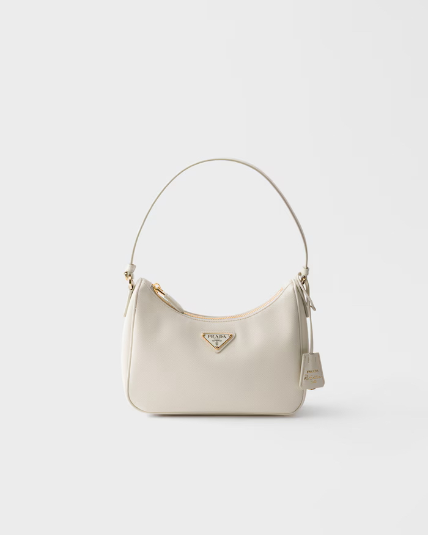
Prada Re-Edition 2005 Saffiano leather mini-bag
₱108,135
Prada Re-Edition 2005 Saffiano leather mini-bag
₱108,135
Rediscover timeless elegance with the Prada Re-Edition 2005 Mini-Bag, a revival of the iconic early-2000s silhouette. Crafted from luxurious Saffiano leather, this compact mini-bag combines structured durability with refined texture. Its signature triangle logo and polished hardware add a subtle yet unmistakable mark of Prada sophistication. Designed for modern versatility, the mini-bag transitions effortlessly from daytime errands to evening affairs, making it a chic companion for any occasion.

FEATURES
₱108,135
* Material: Premium Saffiano leather
* Design: Structured mini-bag silhouette with minimalist, archival-inspired lines
* Strap: Detachable, adjustable shoulder strap for multiple styling options
* Closure: Secure zip fastening
* Hardware: Polished metal with iconic triangle logo
* Capacity: Compact yet suitable for phone, wallet, keys, and small essentials
* Durability: Scratch-resistant leather for long-lasting wear

STYLING TIP
₱108,135
* Wear crossbody for hands-free sophistication
* Carry as a shoulder bag for elevated everyday style
* Pair with tailored outfits or casual ensembles for a modern contrast
* A must-have for those who appreciate designer heritage with contemporary appeal.
* Perfect for city outings, travel, or refined day-to-night transitions.
* A timeless accessory that elevates any wardrobe.
* Makes a thoughtful and stylish gift for fashion connoisseurs.
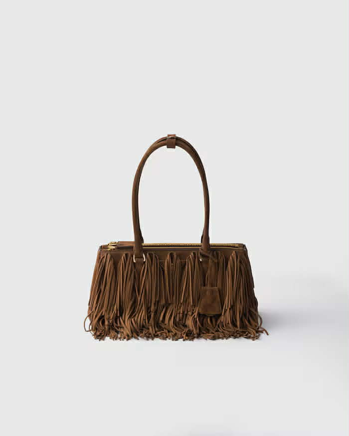
Prada Galleria medium suede bag with fringe
₱335,356
Prada Galleria medium suede bag with fringe
₱335,356
Prada Galleria Medium Suede Bag with Fringe Make a statement with the Prada Galleria Medium Suede Bag with Fringe, where iconic elegance meets playful sophistication. Crafted from sumptuous suede, this medium-sized bag features delicate fringe detailing that adds movement and contemporary flair to Prada’s classic Galleria silhouette. Polished hardware and the recognizable triangle logo complete the luxurious design, balancing timeless style with modern edge. Perfectly sized for daily essentials, the bag transitions seamlessly from office to evening events, making it a versatile and stylish companion.

FEATURES
₱335,356
* Material: Soft, premium suede with refined texture
* Design: Structured Galleria silhouette enhanced with fringe accents
* Handles: Dual top handles for hand carry; optional detachable shoulder strap
* Closure: Secure zip fastening
* Hardware: Polished metal with signature triangle logo
* Capacity: Medium size ideal for wallet, phone, keys, and beauty essentials
* Durability: Suede crafted for gentle wear; best paired with careful handling

STYLING TIP
₱335,356
* Carry by hand for a sophisticated, classic look
* Wear over the shoulder for a relaxed, chic vibe
* Pair with tailored outfits or flowing dresses for a modern bohemian contrast
* A luxurious statement piece that adds personality to any ensemble.
* Perfect for elevating workday looks or stylish weekend outings.
* A contemporary twist on an iconic Prada silhouette.
* Makes a thoughtful and fashionable gift for style enthusiasts.

Large leather tote bag
₱246,384
Large leather tote bag
₱246,384
Elevate your everyday essentials with this Large Leather Tote Bag, a timeless blend of sophistication and practicality. Crafted from premium, supple leather, it offers a luxurious texture while maintaining durable, everyday functionality. Its clean lines and minimal hardware create a versatile design that complements both professional and casual wardrobes. Perfect for work, travel, or city outings, the tote accommodates everything from laptops and documents to personal essentials, making it a reliable and stylish companion.

FEATURES
₱246,384
* Material: Premium full-grain leather with smooth finish
* Design: Spacious, structured tote with minimalist silhouette
* Handles: Sturdy top handles for comfortable hand or shoulder carry
* Closure: Secure zip or magnetic fastening for everyday peace of mind
* Hardware: Polished metal accents for refined detailing
* Capacity: Large enough to carry laptop, documents, wallet, and daily essentials
* Durability: Long-lasting leather designed for daily use

STYLING TIP
₱246,384
* Carry by hand for a professional, polished look
* Wear over the shoulder for effortless, everyday style
* Pair with tailored pieces, casual outfits, or travel ensembles
* A timeless accessory that balances practicality and luxury.
* Ideal for professionals, travelers, or anyone with a modern lifestyle.
* A statement tote that complements any wardrobe seamlessly.
* Makes a thoughtful and stylish gift for those who value both style and functionality.

Large leather tote bag
₱260,072
Large leather tote bag
260,072
Elevate your everyday essentials with this Large Leather Tote Bag, a timeless blend of sophistication and practicality. Crafted from premium, supple leather, it offers a luxurious texture while maintaining durable, everyday functionality. Its clean lines and minimal hardware create a versatile design that complements both professional and casual wardrobes. Perfect for work, travel, or city outings, the tote accommodates everything from laptops and documents to personal essentials, making it a reliable and stylish companion. Features:

FEATURES
₱260,072
* Material: Premium full-grain leather with smooth finish
* Design: Spacious, structured tote with minimalist silhouette
* Closure: : Secure zip or magnetic fastening for everyday peace of mind
* Hardware: Polished metal accents for refined detailing
* Interior: Organized compartments for essentials
* Durability: Long-lasting leather designed for daily use

STYLING TIP
₱260,072
* Carry it by the top handles for a polished, elegant look
* Use the detachable strap for a chic crossbody or shoulder style
* Pair it with tailored suits, dresses, or smart-casual outfits for effortless sophistication.
* This mini-bag can instantly refine and elevate any outfit.
* It should be part of every luxury lover’s collection for its timeless appeal.
* The bag might become your go-to accessory for both daytime events and evening occasions.
* It could also serve as an exceptional gift for milestones, celebrations, or special moments.

Prada Bonnie medium antiqued leather tote bag
₱260,072
Prada Bonnie medium antiqued leather tote bag
₱260,072
Elevate your everyday essentials with the Prada Bonnie Medium Antiqued Leather Tote Bag, a refined expression of heritage craftsmanship and modern sophistication. Crafted from richly textured antiqued leather, this elegant tote showcases a softly structured silhouette that blends timeless appeal with contemporary polish. Subtle detailing and signature refinement make it a versatile companion for both professional and off-duty styling. Designed for effortless functionality, the medium size offers ample space for daily necessities while maintaining a sleek, elevated profile. Whether carried to the office, on weekend outings, or while traveling, this tote delivers understated luxury with practical ease.

FEATURES
₱260,072
* Material: Antiqued leather with rich texture and depth
* Design: Medium structured tote with clean, sophisticated lines
* Handles: Sturdy top handles for comfortable hand or shoulder carry
* Closure: Secure top fastening for everyday convenience
* Hardware: Refined metal accents enhancing its classic aesthetic
* Capacity: Spacious enough for a tablet, wallet, cosmetics pouch, and daily essentials
* Craftsmanship: Expert Italian construction designed for lasting elegance

STYLING TIP
₱260,072
* Carry by hand to complement tailored suiting or office ensembles
* Wear over the shoulder for polished daytime sophistication
* Pair with neutral separates for a timeless look, or elevate casual denim with structured luxury
* A heritage-inspired tote that embodies understated luxury.
* Designed for modern professionals with an appreciation for refined craftsmanship.
* A sophisticated everyday companion that transitions seamlessly from work to weekend.
* A timeless gift choice for those who value elegance and enduring style.

Prada Galleria medium suede bag with fringe
₱219,008
Prada Galleria medium suede bag with fringe
₱219,008
Elevate your everyday wardrobe with the Prada Galleria Medium Suede Bag with Fringe, a refined reinterpretation of an iconic silhouette. Crafted from velvety suede, this statement piece blends structured elegance with dynamic fringe detailing, creating a striking balance between sophistication and modern movement. The softly structured profile maintains the timeless appeal of the Galleria design while adding a bold, textural edge. Perfect for day-to-evening transitions, the medium size offers practical organization without compromising on style. Whether styled for city outings, business engagements, or elevated casual wear, this bag delivers unmistakable luxury with contemporary flair.

FEATURES
₱219,008
* Material: Soft suede with fluid fringe detailing
* Design: Structured Galleria silhouette with modern textural accents
* Handles: Dual top handles with optional shoulder strap for versatile carry
* Closure: Secure zip-top or snap fastening for everyday convenience
* Hardware: Polished metal accents for refined contrast
* Interior: Organized compartments for effortless storage
* Capacity: Ideal for tablet, wallet, phone, and daily essentials
* Craftsmanship: Expert Italian construction with signature finishing touches

STYLING TIP
₱219,008
* Pair with tailored separates to contrast the soft suede texture
* Style with flowing dresses or boots to highlight the movement of the fringe
* Wear crossbody for effortless daytime sophistication
* A timeless icon reimagined with modern movement and texture.
* Perfect for those who appreciate classic structure with a contemporary twist.
* A standout accessory that brings depth and dimension to any ensemble.
* An elevated statement piece that transitions seamlessly from day to night.

Medium leather top-handle bag
₱219,008
Medium leather top-handle bag
₱219,008
Step into timeless sophistication with the Medium Leather Top-Handle Bag, a refined accessory designed to embody elegance and modern grace. Crafted from smooth, high-quality leather, this structured silhouette blends classic charm with contemporary minimalism. Its clean lines and polished finish create a statement piece that is both versatile and enduring — perfect for those who appreciate understated luxury and effortless style.

FEATURES
₱219,008
* Size: Medium – ideal for daily essentials without compromising on style
* Material: Premium leather with a smooth, structured finish
* Design: Elegant top handle with a sleek, contemporary silhouette
* Storage: Spacious main compartment with organized interior pockets
* Versatility: Suitable for professional settings, social occasions, and polished everyday wear

STYLING TIP
₱219,008
* Carry by the top handle for a sophisticated, classic look
* Pair with tailored outfits for work or structured dresses for evening occasions
* Complement with minimal gold or silver accessories for a refined finish
* This bag can instantly elevate a simple outfit into a polished, sophisticated ensemble.
* It should be a staple in every modern wardrobe for those who value timeless design and functionality.
* The Medium Leather Top-Handle Bag might become your everyday essential thanks to its versatile structure and elegant appeal.
* It could also serve as a thoughtful gift for milestones, celebrations, or special occasions.

Medium washed leather bag
₱219,008
Medium washed leather bag
₱219,008
Embrace effortless sophistication with the Medium Washed Leather Bag, a timeless accessory that blends relaxed texture with refined design. Crafted from beautifully washed leather, it offers a soft, lived-in feel while maintaining a structured elegance. The subtle character of the leather adds depth and individuality, making each piece uniquely stylish. Perfect for the modern individual who values comfort, versatility, and understated luxury, this bag transitions seamlessly from day to evening.
FEATURES
₱219,008
* Size: Medium – perfectly balanced to hold daily essentials with ease
* Design: Material: Soft washed leather with a naturally textured finish
* Design: Relaxed yet structured silhouette with refined detailing
* Storage: Spacious interior with practical compartments for organization
* Versatility: Ideal for workdays, weekend outings, and casual-chic occasions
STYLING TIP
₱219,008
* Pair with tailored blazers for a contrast of structure and softness
* Style with denim and neutral tones for an elevated everyday look
* Carry with minimalist accessories to highlight the leather’s natural texture
* This bag can enhance a simple outfit with effortless, relaxed elegance.
* It should be part of any wardrobe that values timeless craftsmanship and everyday practicality.
* The Medium Washed Leather Bag might become your go-to accessory thanks to its soft texture and versatile appeal.
* It could also make a thoughtful gift for birthdays, anniversaries, or meaningful celebrations.
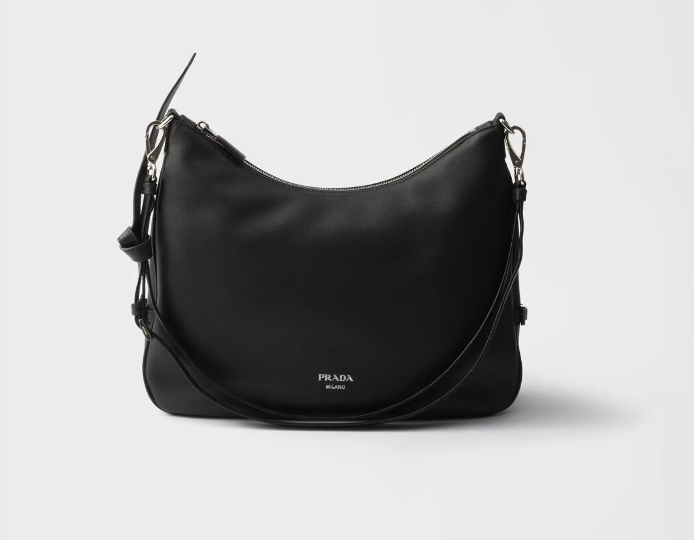
Prada Fold large leather shoulder bag
₱198,476
Prada Fold large leather shoulder bag
₱ 198,476
Elevate your everyday wardrobe with the Prada Fold Large Leather Shoulder Bag, a refined expression of modern luxury and effortless functionality. Expertly crafted from premium leather, this spacious silhouette embodies the brand’s signature balance of innovation and timeless design. Its clean structure, subtle detailing, and elevated finish make it a versatile companion for both professional settings and off-duty moments. Designed to move seamlessly through your day, the Fold Large offers generous space for work essentials, travel necessities, and daily must-haves — all while maintaining a polished, sophisticated presence.

FEATURES
₱198,476
* Material: Premium smooth leather with a soft yet structured feel
* Design: Contemporary fold construction with a sleek, minimalist silhouette
* Strap: Comfortable shoulder strap for effortless carry
* Closure: Secure top fastening for everyday practicality
* Hardware: Refined metal accents for understated elegance
* Capacity: Spacious interior suitable for laptop, documents, wallet, and essentials
* Craftsmanship: Expert Italian construction ensuring durability and longevity

STYLING TIP
₱198,476
* Wear over the shoulder with tailored separates for a modern professional look
* Pair with relaxed denim and knitwear for elevated everyday style
* Style with structured outerwear for a polished city aesthetic
* A contemporary icon that merges practicality with elevated design.
* Designed for the modern woman who values both style and function.
* A sophisticated statement piece that transitions seamlessly from work to weekend.
* An investment-worthy bag that reflects timeless Italian craftsmanship.
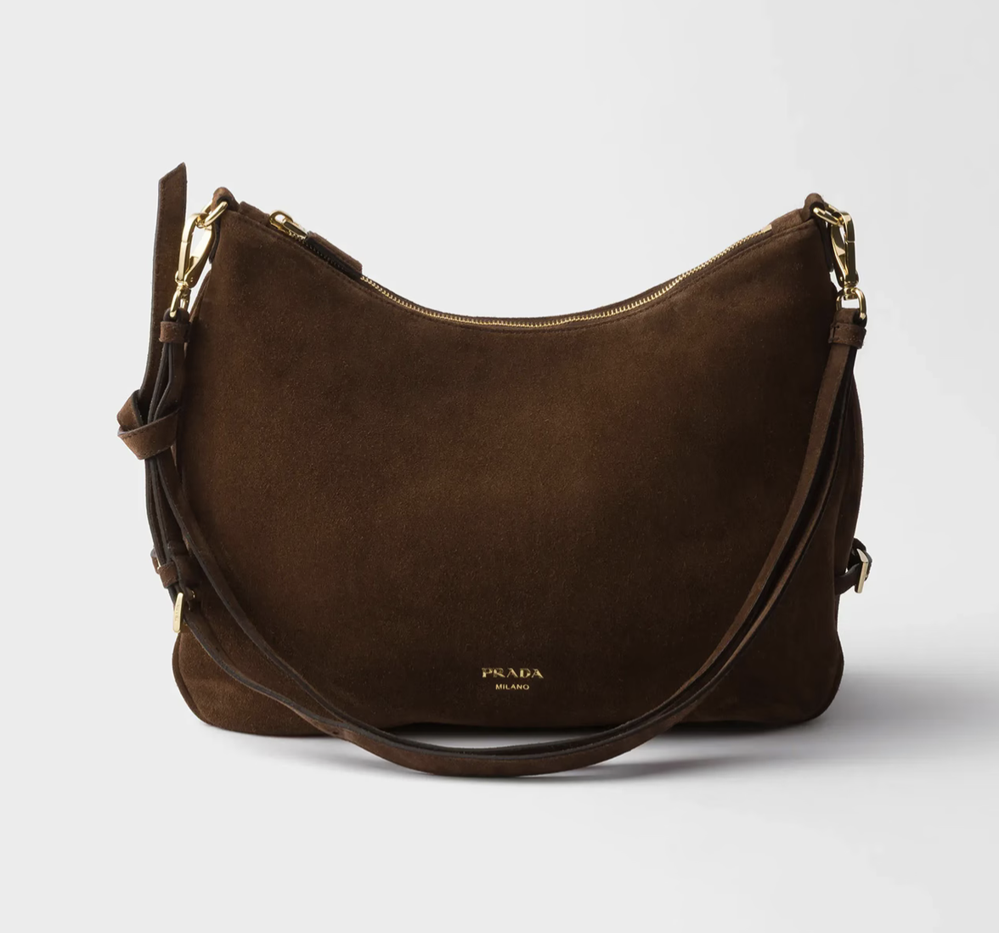
Prada Fold large suede bag
₱198,476
Prada Fold large suede bag
₱198,476
Refined yet effortlessly modern, the Prada Fold Large Suede Bag showcases understated luxury with a soft, tactile finish. Crafted from premium suede, this spacious silhouette highlights the brand’s contemporary approach to timeless design. Its clean lines and sculptural fold construction create a sophisticated statement while remaining versatile enough for everyday wear. Perfect for workdays, weekend outings, or travel, the bag offers generous interior space without compromising on elegance — making it a polished essential for a dynamic lifestyle.

FEATURES
₱198,476
* Material: Premium suede with a rich, velvety texture
* Design: Structured fold silhouette with minimalist detailing
* Strap: Comfortable shoulder carry for effortless wear
* Closure: Secure top fastening for everyday convenience
* Hardware: Subtle metal accents for refined contrast
* Capacity: Spacious interior suitable for laptop, documents, wallet, and daily essentials
* Craftsmanship: Expertly made with attention to detail and durability

STYLING TIP
₱198,476
* Pair with tailored pieces for a soft yet powerful professional look
* Style with tonal neutrals for an elevated, minimalist aesthetic
* Wear with relaxed denim and outerwear for modern off-duty polish
* A luxurious suede statement designed for modern versatility.
* Where soft texture meets architectural structure.
* A timeless investment piece with contemporary appeal.
* Ideal for those who appreciate craftsmanship and understated elegance.
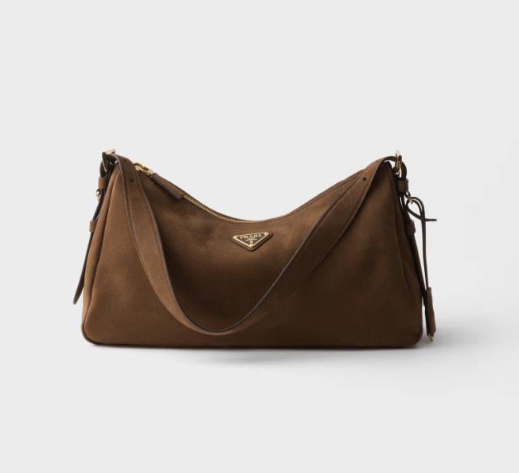
Prada Aimee large nubuck leather shoulder bag
₱260,072
Prada Aimee large nubuck leather shoulder bag
₱260,072
Elevate your everyday style with the Prada Aimée Large Nubuck Leather Shoulder Bag, a sophisticated balance of soft texture and structured elegance. Crafted from luxurious nubuck leather, this refined silhouette offers a velvety finish with a contemporary edge. Its clean lines and minimalist detailing reflect Prada’s modern aesthetic while maintaining timeless versatility. Designed for both professional and everyday settings, the Aimée Large provides generous space for essentials — from work documents to daily necessities — making it a polished companion for a dynamic lifestyle.

FEATURES
₱260,072
* Material: Premium nubuck leather with a soft, matte finish
* Design: Sleek, structured silhouette with understated detailing
* Strap: Comfortable shoulder strap for effortless carry
* Closure: Secure top fastening for practicality and ease
* Hardware: Refined metal accents for subtle contrast
* Capacity: Spacious interior suitable for laptop, wallet, documents, and essentials
* Craftsmanship: Expert Italian construction ensuring durability and longevity

STYLING TIP
₱260,072
* Pair with tailored separates for a modern office look
* Style with neutral tones to highlight the bag’s rich texture
* Wear over structured outerwear for elevated city sophistication
* A refined expression of texture and contemporary luxury.
* Designed for the modern woman who values subtle sophistication.
* A timeless shoulder bag with a soft yet structured presence.
* An elegant investment piece for everyday refinement.
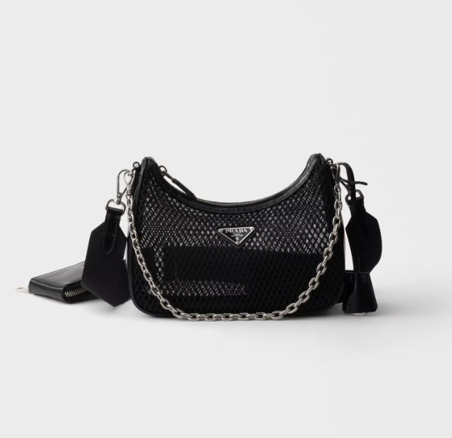
Prada Re-Edition 2005 mesh and brushes leather
₱198,476
Prada Re-Edition 2005 mesh aand brushes leather
₱198,476
A modern revival of an early-2000s icon, the Prada Re-Edition 2005 Mesh and Brushed Leather Bag blends sporty texture with refined craftsmanship. This contemporary reinterpretation pairs airy mesh with sleek brushed leather trims, creating a dynamic contrast that feels both nostalgic and forward-thinking. Compact yet statement-making, it captures the spirit of effortless, on-the-go style. Designed for versatility, the Re-Edition 2005 transitions seamlessly from day to night, offering lightweight practicality with elevated detailing.

FEATURES
₱198,476
* Material: Technical mesh construction with smooth brushed leather accents
* Design: Compact, curved silhouette inspired by the original 2005 style
* Strap: Adjustable shoulder strap for customizable wear
* Closure: Secure top zip fastening
* Hardware: Polished metal details for a refined finish
* Capacity: Ideal for phone, wallet, keys, and small essentials
* Craftsmanship: Expertly constructed with a balance of sport and luxury

STYLING TIP
₱198,476
* Pair with relaxed tailoring for a modern contrast of sporty and polished
* Wear crossbody with casual denim for effortless everyday style
* Style with monochrome looks to highlight the mixed textures
* A nostalgic icon reimagined with contemporary edge.
* Where sporty mesh meets signature Italian refinement.
* A compact statement piece designed for dynamic city living.
* The perfect fusion of early-2000s attitude and modern sophistication.